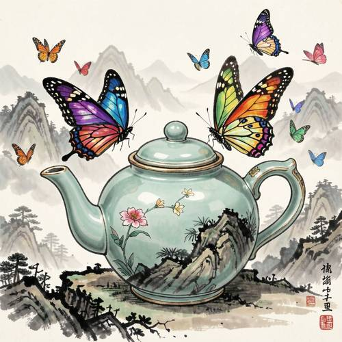
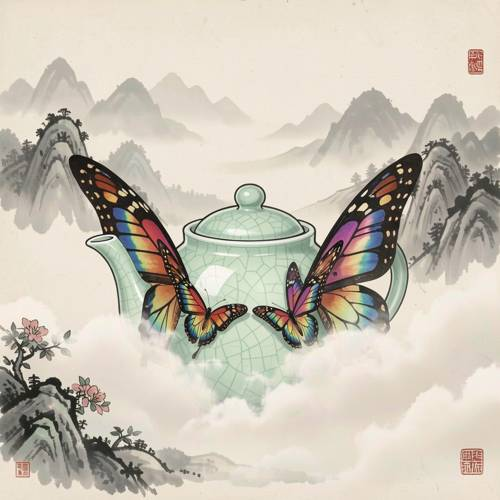
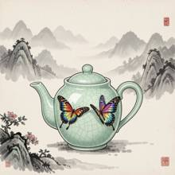

Style — A celadon teapot grows colorful butterfly wings and flies among the ha
A celadon teapot grows colorful butterfly wings and flies among the hazy distant mountains. It has a strong national style and ink painting style.

Direct — one call, no iteration

Continuum — Kimi K3 + FLUX.2-klein-9B
Judge — Direct
PASSStyle — The image displays a strong national and ink painting style. The background features hazy, distant mountains and pine trees rendered with black and grey ink washes, characteristic of traditional Chinese landscape painting. The composition includes Chinese calligraphy and a red seal stamp in the lower right corner, further reinforcing the style. The central teapot is a celadon pot, a classic element in East Asian art.
FAILCompound - Imagination — The image shows a celadon teapot on a piece of land in the foreground. There are multiple colorful butterflies flying around it, and two large butterflies are perched on the lid of the teapot. However, the teapot itself does not have wings growing from it, nor is it depicted as flying. The wings belong to separate butterfly entities resting on the pot.
Judge — Continuum
PASSStyle — The image exhibits a strong national and ink painting style. This is evident in the background, which features hazy mountains rendered in the style of traditional Chinese landscape painting (shan shui) with varying tones of ink. The foreground elements, such as the rocks and the flowering branch, are depicted with calligraphic brushstrokes. The overall composition, the use of misty clouds, and the inclusion of red seals in the corners are all characteristic of this artistic tradition.
PASSCompound - Imagination — The image depicts a celadon-colored teapot as the central subject. A pair of large, colorful butterfly wings with a rainbow gradient pattern is attached to the sides of the teapot, giving the impression that they have grown from it. The teapot is shown suspended in the air amidst clouds and mist, in front of a mountainous landscape, clearly illustrating the act of flying.
What the agent did
Thinking
We need answer with image generation benchmark policy. Need use flux2-klein only. Need generate inspect edit loop, mark best. Need likely generate 1024x1024. Prompt in English, visual. Need maybe "strong national style" means Chinese national style? They say national style and ink painting style. Need generate. Need perhaps image only and brief. We need tool generate. Let's call generate_image with prompt. Need omit seed, steps, guidance. Visual detail: celadon teapot central, iridescent butterfly wings, misty distant mountains, Chinese ink wash, mineral pigments, negative space, xuan paper texture, seal perhaps. "national style" could be Chinese aesthetic, ink painting. Need strong national style. Let's generate with flux2-klein.
Step 1 — `generate_image`
{
"model": "flux2-klein",
"prompt": "A celadon porcelain teapot with a pale jade-green crackle glaze, grown vivid multicolored butterfly wings from its sides, flying gracefully among hazy distant mountains. Strong traditional Chinese national style, expressive ink wash painting, xuan paper texture, flowing black ink contours, mineral pigment accents, delicate gongbi detail on the wings, soft mist and layered mountain silhouettes, generous negative space, poetic elegant composition, subtle red seal accent, vertical central teapot orientation, no text.",
"width": 1024,
"height": 1024
}
Result img_0

Thinking
Need inspect image manually from inline. It has two separate butterfly illustrations on teapot, wings not growing from sides? Prompt asks teapot grows butterfly wings and flies among hazy distant mountains. Current teapot on ground/shadow with butterflies attached flat, not flying, wings appear illustrations rather than wings extending. Need edit. Could maybe mark best initially? Policy says mark as soon willing to submit. Not yet because key wrong. Need targeted edit. Use flux2-klein editing. Ask lift teapot into air in front of mountains, wings emerge from teapot sides, remove shadow/ground maybe fill background. But prompt should only change. Need maybe "Make the teapot float in the misty sky, transform the two painted butterflies into large colorful butterfly wings growing from the teapot's left and right sides, no ground contact, preserve..." Since edits risk. Need perhaps use references? Not yet. Let's edit.
Step 2 — `edit_image`
{
"model": "flux2-klein",
"image": "img_0",
"prompt": "Make the celadon teapot float in the misty sky in front of the mountains, with the colorful butterfly patterns becoming large living butterfly wings that grow outward from its left and right sides; replace the ground shadow with soft pale mist and open paper background."
}
Result img_1
Thinking
Image now clearly flying/floating, wings grow but there are still extra small butterflies? Actually each side has large wings behind and smaller butterflies attached front—could be okay colorful butterfly wings, though wings appear dual sets. Teapot floats among mist and distant mountains. Strong Chinese national style. Could mark best now. Need maybe inspect details? no text requested. Need maybe final mark and stop. But maybe user said "grows colorful butterfly wings and flies among hazy distant mountains". Image fits. Need mark.
Step 3 — `mark_best`
{
"image": "img_1",
"reason": "The celadon teapot is clearly floating among misty layered mountains, with vivid butterfly wings growing from both sides, in a strong traditional Chinese ink-wash style."
}
Thinking
Need final concise maybe describe. Since image output already inline? final should mention complete.
Model
Created the celadon teapot soaring with colorful butterfly wings through hazy, ink-wash mountains in a traditional Chinese national style.